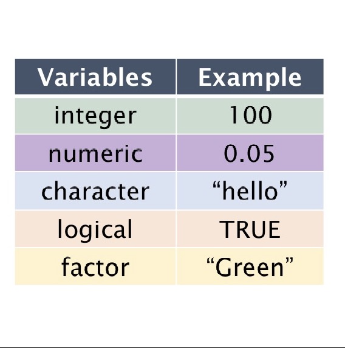

Variables in R
Creating a Variable
In R, you can create a variable using the assignment operator
<-.
name <- "Ben"
age <- 21
score <- 98.5R will remember these values while the script or session is active.
In this example, "Ben" is a character (text) value, 21 is a numeric value, and 98.5 is also numeric.
Why Variables Matter
Variables help you store data so you can use it in calculations, plots, and data frames.
= vs <- in R
In R, both = and <- can assign values to a variable in many situations:
name <- "Ben"
age = 21
However, many R style guides and RStudio defaults prefer
<- for assignments in scripts. It makes assignment stand out
visually and avoids confusion with other uses of =, such as
naming function arguments:
mean(x = c(1, 2, 3)) # here '=' is used to name an argument
A good habit is to use <- when assigning to variables and
reserve = for function arguments, especially as you write
longer R scripts.
Variables Mini-Quiz
Test your knowledge of R variables: